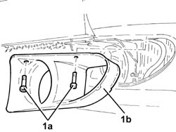
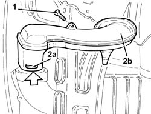
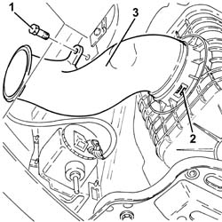
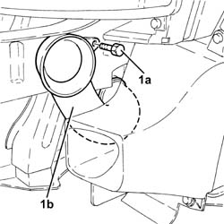
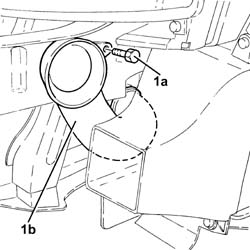

1048A23 cold air intake - r r
- Path
- Procedures > 10 ENGINE > 1048 ENGINE AIR SUPPLY CIRCUIT > 1048A vacuum air circuit > 1048A23 cold air intake - r r
- Kind
- repair procedure (removal / refitting; the operation number is the code)
- Applies to
- all engines; all production periods
- Interactive page
- https://sloeber94.github.io/elrnDB-a156/en/#/3237678
Applies to: all engines; all production periods
 Removing
Removing
 Refitting
RefittingPosition the vehicle on the ramp.
Proceed with the removal 7055B54 under-engine guard - r r .
Proceed with the removal 4450B10 Front WHEEL (one) - R.R. (Left side).
Proceed with the removal 7055B64 Engine compartment DUST shield in front wheel arch (one), left or right - R.R. (Left side).
Proceed with the removal 7055B42 Additional FRONT WHEEL ARCH (one), left or right - R.R. (Left side).
1. Undo the bolts (1a) and remove the fog light trim (1b) after having released it from the fastening spring.

Applies to: all engines; all production periods
1. Undo the bolt fixing the air filter cold air intake to the resonator.
2. Press the springs (2a) and remove the air filter cold air intake (2b) from the wheel arch.

Applies to: all engines; all production periods
Refitting
RemovingPlace the cold air intake for the air filter back in its housing.
Tighten the bolt fixing the air filter cold air intake to the resonator.
Place the fog light trim back in its housing and secure it using the bolts.
Proceed with the refitting 7055B42 Additional FRONT WHEEL ARCH (one), left or right - R.R. (Left side).
Proceed with the refitting 7055B64 Engine compartment DUST shield in front wheel arch (one), left or right - R.R. (Left side).
Proceed with the refitting 4450B10 Front WHEEL (one) - R.R. (Left side).
Proceed with the refitting 7055B54 under-engine guard - r r .
Remove the car from the ramp.
Applies to: engines: 2.0 JTS, 2.0 JTS; all production periods
Removing
RefittingPosition the vehicle on the ramp.
Proceed with removal 7055B54 under-engine guard - r r .
1. Undo the bolt fixing the air filter cold air intake to the bodyshell.
2. Release the retaining springs fastening the cold air intake to the air filter casing.
3. Remove the air filter cold air intake.

Applies to: engines: 2.0 JTS, 2.0 JTS; all production periods
Refitting
RemovingPlace the cold air intake for the air filter back in its housing and connect it to the air filter until the retaining springs are attached.
Tighten the bolt securing the cold air intake for air filter to the bodywork.
Proceed with refitting 7055B54 under-engine guard - r r .
Remove the car from the ramps.
Applies to: engines: 1.9 JTD 8v , 2.4 JTD 10v; all production periods
Removing
Refitting7055A43 central front grille - r r .
7055A41 RIGHT FRONT GRILLE - R.R. (Left side).
5540B16 FRONT LIGHT CLUSTER with direction indicator (one), left or right - R.R. (Left side).
Applies to: engines: 1.9 JTD 8v , 2.4 JTD 10v; all production periods
Refitting
Removing1048A21 filter input sleeve - r r .
5540B16 FRONT LIGHT CLUSTER with direction indicator (one), left or right - R.R. (Left side).
7055A41 RIGHT FRONT GRILLE - R.R. (Left side).
Applies to: engines: 1.9 JTD 16v; all production periods
Removing
RefittingEnsure that the ignition key is in OFF position, then disconnect the battery negative terminal (-).
 | Name | Connector |
|---|---|---|
- | Battery |
Proceed with removal 7055A43 central front grille - r r .
Proceed with removal 7055A41 RIGHT FRONT GRILLE - R.R. .
Proceed with removal 7210E10 R.R. FRONT BUMPER .
1. Undo the bolt (1a), release the air cleaner cold air intake (1b) from the air cleaner and remove.

Applies to: engines: 1.9 JTD 16v; all production periods
Refitting
RemovingPlace the air cleaner cold air intake back in its housing and secure it using the appropriate bolt.
Proceed with refitting 7210E10 R.R. FRONT BUMPER .
Proceed with refitting 7055A41 RIGHT FRONT GRILLE - R.R. .
Proceed with refitting 7055A43 central front grille - r r .
Connect the negative (-) battery terminal.
Applies to: engines: 2.4 JTD 20v; all production periods
Removing
RefittingProceed with removal 7055A43 central front grille - r r .
Proceed with removal 7055A41 RIGHT FRONT GRILLE - R.R. .
Proceed with removal 7210E10 R.R. FRONT BUMPER .
1. Undo the bolt (1a) and remove the cold air intake for the air filter (1b), after disengaging it from the air filter.

Applies to: engines: 2.4 JTD 20v; all production periods
Refitting
RemovingPlace the air cleaner cold air intake back in its housing and secure it using the appropriate bolt.
Proceed with refitting 7210E10 R.R. FRONT BUMPER .
Proceed with refitting 7055A41 RIGHT FRONT GRILLE - R.R. .
Proceed with refitting 7055A43 central front grille - r r .
Topics linked from this page (10)
- 1048A21 filter input sleeve - r r
- 4450B10 Front WHEEL (one) - R.R.
- 5540B16 FRONT LIGHT CLUSTER with direction indicator (one), left or right - R.R.
- 7055A41 RIGHT FRONT GRILLE - R.R.
- 7055A43 central front grille - r r
- 7055B42 Additional FRONT WHEEL ARCH (one), left or right - R.R.
- 7055B54 under-engine guard - r r
- 7055B64 Engine compartment DUST shield in front wheel arch (one), left or right - R.R.
- 7210E10 R.R. FRONT BUMPER
- A1B Battery ( BATTERY NEGATIVE )